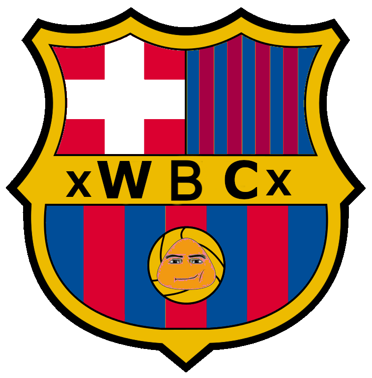

Bienvenidos al Club de baloncesto Poucelona
Somos más que un club de baloncesto; somos una familia apasionada por el deporte, la competición y la camaradería. En el corazón de Poucelona, nuestra ciudad, hemos construido una comunidad que comparte una pasión inquebrantable por el baloncesto. Desde nuestros humildes comienzos hasta nuestro lugar en la escena baloncesto actual, hemos estado unidos por un amor compartido por el juego.
Nuestra Historia
El Club de baloncesto Poucelona se fundó en 1975 y desde entonces ha experimentado un crecimiento constante y un compromiso inquebrantable con el desarrollo del baloncesto local. Hemos pasado por altibajos, pero en cada paso del camino, hemos mantenido nuestro compromiso con la excelencia y la formación de jugadores talentosos.
Valores y Filosofía
En el Club de baloncesto Poucelona, creemos en la formación de jugadores completos. No solo estamos interesados en ganar partidos, sino también en el desarrollo de habilidades, el respeto por el juego limpio y el fomento de valores como el trabajo en equipo y la dedicación. Nuestros entrenadores altamente capacitados se esfuerzan por inculcar estas cualidades en nuestros jugadores, independientemente de la categoría o nivel en el que compitan.
Nuestro Campo
En nuestro afán por brindar a nuestros jugadores las mejores condiciones de entrenamiento, hemos invertido en instalaciones de última generación. Nuestro complejo deportivo cuenta con campos de césped natural y artificial, vestuarios modernos y áreas de recuperación, todo diseñado para fomentar el desarrollo de los jugadores de basket.

Nuestro Equipo
Contamos con una amplia gama de equipos que compiten en diferentes categorías, desde la escuela de baloncesto para niños hasta nuestro equipo de élite. Nuestros jugadores reciben entrenamiento de alta calidad y participan en competiciones locales y regionales. ¡Descubre más sobre nuestros equipos y sus logros en nuestra sección de "Equipos"!
| JUGADORES | |||
|---|---|---|---|
| Nombre | Localidad | Edad | |
| Lionel Messi | Barcelona | 34 |
|
| Cristiano Ronaldo | Turín | 36 |
|
| Nestor Ortiz | París | 29 |
|
| Kylian Martinez | París | 23 |
|
| Robert Martini | Múnich | 33 |
|
| Patxi De Bruyne | Mánchester | 30 |
|
| Paco Modrić | Madrid | 36 | |
|
|
|||
| Virgil van Dijk | Liverpool | 30 |
|
| Sergio Ramas | París | 35 | |
|
|
|||
| Luis Juarez | Madrid | 34 |
|
| Karim Benzema | Madrid | 34 |
|
| Kevin Volland | Monaco | 29 | |
Comunidad y Afición
Los verdaderos héroes detrás de nuestro éxito son nuestros apasionados aficionados y la comunidad de Poucelona. Su apoyo inquebrantable es lo que nos impulsa a dar lo mejor en cada partido y a seguir creciendo como club.
Sé Parte de la Historia del Poucelona
Si compartes nuestra pasión por el baloncesto y quieres formar parte de nuestra familia, ya sea como jugador, entrenador, voluntario o aficionado, ¡te invitamos a unirte al Club de baloncesto Poucelona! Descubre cómo puedes involucrarte en nuestra sección "Únete a Nosotros" y únete a nuestra emocionante aventura de basket. En el Club de baloncesto Poucelona, estamos comprometidos con el juego, el crecimiento y la diversión. ¡Bienvenido a nuestro mundo de baloncesto!